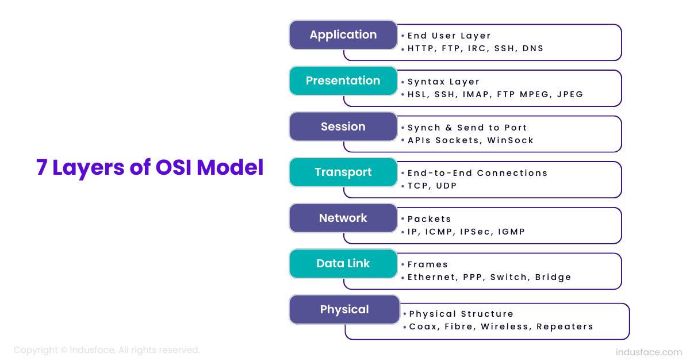

Tìm hiểu về Mô hình OSI
Mô hình OSI (Open Systems Interconnection) là một khung tham chiếu gồm 7 lớp giúp hiểu và phân tích cách dữ liệu được truyền giữa các hệ thống mạng. Từ lớp vật lý đến lớp ứng dụng, mỗi lớp có vai trò riêng và tương tác với lớp bên trên và bên dưới để đảm bảo truyền tải thông tin an toàn và hiệu quả.
